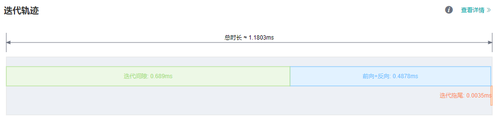
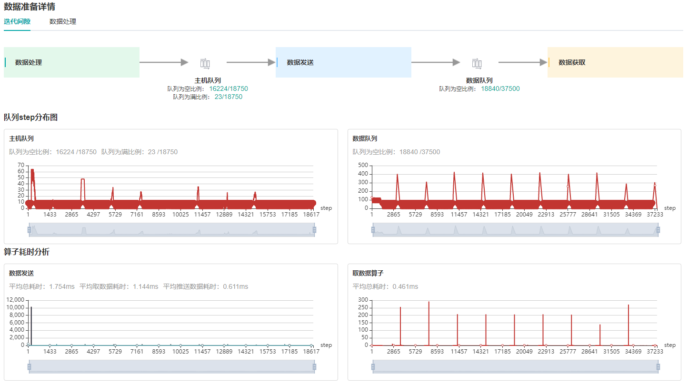
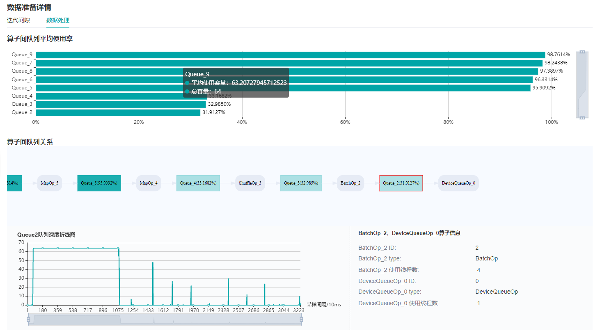
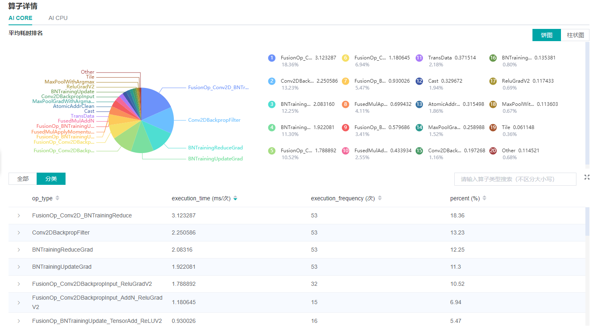

性能调试¶

Profiler为MindSpore提供了性能调优能力，在算子性能、迭代性能、数据处理性能等方面提供了易用、丰富的调试功能，帮助用户快速定位、解决性能问题。
本章将介绍性能调优的常见方法及案例，以及一些常见问题的处理。
快速入门¶
Profiler的功能介绍及使用说明请参见教程：
本节将通过三个典型案例介绍Profiler工具的常见使用方式。
案例一：迭代间隙过长¶
如您在MindInsight性能分析页面观察到，迭代轨迹中的迭代间隙过长，这通常可能说明数据处理过程中存在可以优化的性能点。

图1： 迭代轨迹中的迭代间隙过长
查看网页下方的数据处理详情卡片，我们观察到，主机队列为满的情况比例较少，可以初步判定是数据处理阶段存在性能问题。进入数据准备详情页查看具体问题。

图2：数据准备详情页面——迭代间隙

图3：数据准备详情页面——数据处理
通过观察数据处理的算子间队列关系，我们发现，Queue_3和Queue_2的使用比率较低，因此，可以判定是对应的数据处理算子（ShuffleOp_3和BatchOp_2）的性能还有优化空间。您可以根据这些信息调整训练脚本。
您也可以参考首页左侧小助手提供的建议信息，对训练脚本进行优化。
图4：小助手
案例二：前后向运行时间长（算子计算时间过长）¶
当您发现迭代运行时间过长时，可以首先查看迭代轨迹，观察各部分的时间分布是否正常。
图5：迭代轨迹中，前向后向运行时间过长
从上图的迭代轨迹中，我们发现前向和后向的运行时间偏长。打开算子耗时统计详情页面，进一步确定是否存在耗时过高的算子，判断算子执行时间上是否有优化空间。

图6：通过算子耗时详情页面寻找可优化算子
案例三：前后向运行时间长（算子执行间隙过长）¶
在案例二中，我们介绍了由于算子执行时间较长导致迭代运行时间长的情况。除此之外，算子与算子间执行的时间间隙过大也会造成运行时间过长。
要确认算子的执行是否存在间隙过大的情况，我们可以观察时间线数据。
首先，在主页面右下角的时间线卡片点击下载按钮，对时间线数据进行下载。下载完成后，在谷歌浏览器中打开chrome://tracing，将文件上传或拖入网页中进行数据加载。

图7：通过时间线数据寻找可优化的算子执行间隙
在发现算子间执行存在较大间隙时，通常是与集合通信或AICPU算子产生的依赖还未解除，您可以调整脚本对该部分进行优化，进一步提升训练性能。